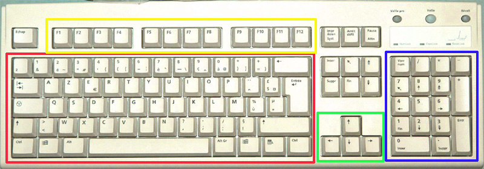

Découvrir les zones du clavier
Objectif : Comprendre l'organisation du clavier en 4 zones principales

🔵 Zone des numériques
Cette zone se trouve à droite du clavier. Elle contient :
- Les chiffres de 0 à 9
- Les signes pour les calculs :
Addition (+) • Soustraction (-) • Multiplication (*) • Division (/)
🟢 Zone des flèches de direction
Cette zone se trouve entre le clavier principal et le pavé numérique.
Ces flèches permettent de déplacer le curseur dans un texte sans utiliser la souris.
🟡 Zone des touches de fonction
Cette zone se trouve en haut du clavier. Elle contient les touches :
Ces touches ont des fonctions spéciales selon les logiciels utilisés.
🔴 Zone des caractères
C'est la zone principale du clavier. Elle contient :
- Les lettres de A à Z
- Les chiffres de 0 à 9 (en haut)
- Les signes de ponctuation : . , ; : ! ?
- Les caractères spéciaux : @ # € & etc.
💡 Astuce : C'est la zone que vous utiliserez le plus pour écrire du texte.
Cliquez sur le bouton Suite pour continuer
Continuer →